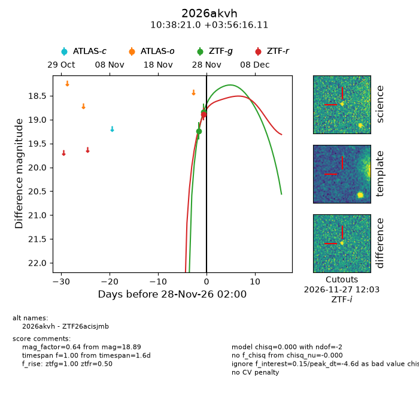
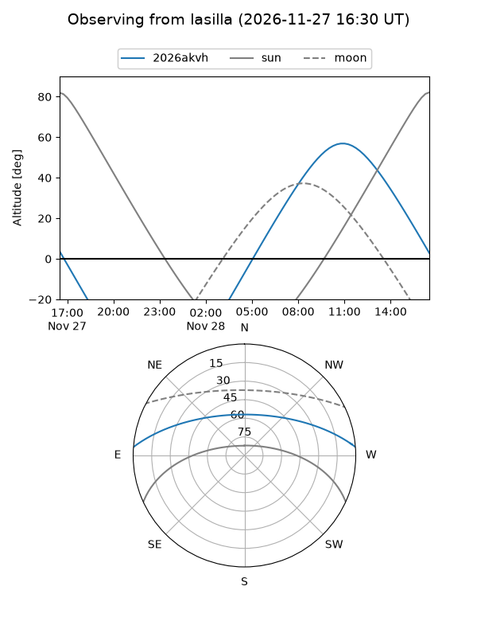
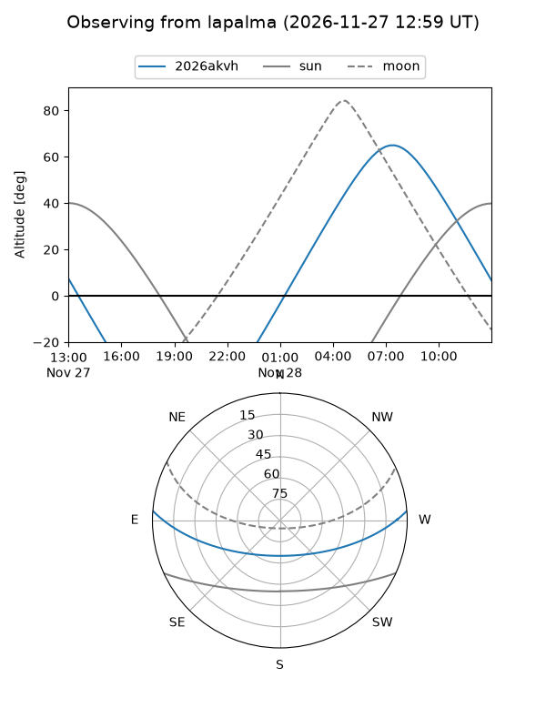
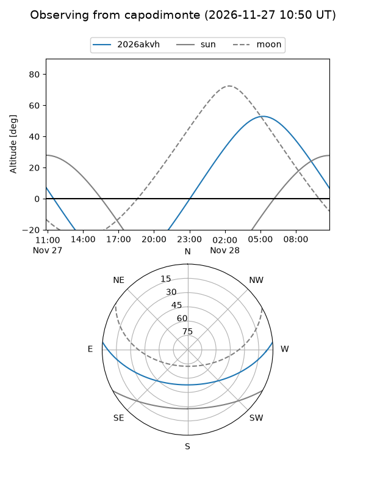
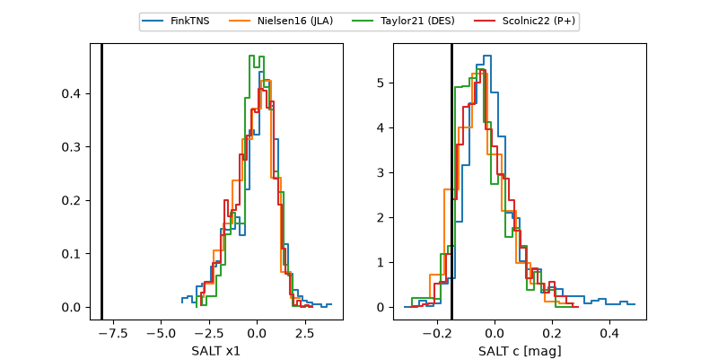

2026akvh
Target 2026akvh at 2026-11-28 02:01
Aliases and brokers:
FINK-ZTF: ztf.fink-portal.org/ZTF26acisjmb
Lasair-ZTF: lasair-ztf.lsst.ac.uk/objects/ZTF26acisjmb
ALeRCE-ZTF: alerce.online/object/ZTF26acisjmb
YSE-PZ: ziggy.ucolick.org/yse/transient_detail/2026akvh
TNS name: wis-tns.org/object/2026akvh
Direct TNS query: direct search
alt names
ZTF26acisjmb (ztf,fink_ztf)
2026akvh (tns,yse)
Coordinates:
equatorial (ra, dec) = 159.5876,+3.93781
equatorial (HMS+DMS) = 10:38:21.02,+03:56:16.11
galactic (l, b) = (243.1845,+50.68330)
Flags:
peak dt: -4.6
Photometry:
last ztfg=18.84, ztfr=18.89
2 ztfg, 1 ztfr detections
Lightcurve

Visibility



Additional plots
